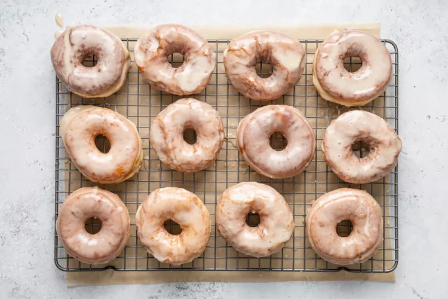

Method
-
Activate the yeast:
Whisk together the lukewarm milk, sugar, and yeast in a small bowl. Set aside until foamy, about 10 minutes. How to Proof Yeast
READ MORE: How to Proof Yeast

-
Make the dough:
Meanwhile, combine the flour and salt in the bowl of a stand mixer fitted with the dough hook attachment. Add the frothy yeast mixture along with the eggs and butter.
Mix on medium-low speed until combined, about 1 to 2 minutes, stopping to scrape down sides as needed. Increase the speed to medium and knead the dough for 4 more minutes. The dough will be slightly sticky and mostly clear sides of the bowl but may still stick to the bottom.
-
Proof the dough:
Transfer the dough to a large, lightly greased bowl, turning to coat, and cover with lightly greased plastic wrap. Place the dough in a warm spot until doubled in size, about 1 hour.
-
Roll out the dough and proof again:
Once proofed, punch the dough down and turn it out onto a lightly floured surface. Roll the dough into a circle roughly 12 inches in diameter that is 1/2 inch thick.
Use a 3-inch round cutter to cut out about 12 rounds. Use a 1-inch cutter to cut out the center holes of each donut, reserving the holes to fry.
Gather any scraps and roll them into balls about the size of the holes. Transfer the donuts to a parchment-lined baking sheet and the holes to another parchment-lined baking sheet, spacing the cut dough at least 1/2 inch apart.
Cover both baking sheets with lightly greased plastic wrap. Let rise once more in a warm place for about 30 minutes. The dough is proofed when you gently touch a donut and the dough slowly bounces back.
-
Fry the Donuts:
Fill a large, deep, heavy-bottomed pot (like a Dutch oven) with about 2 to 3 inches of oil; it should reach no more than halfway up the pot. Heat over medium heat until the oil reaches 350°F.
Line a platter or baking sheet with paper towels and set a wire rack over another baking sheet, placing both by your pot.
Without overcrowding the pot, fry 2 to 3 donuts at a time, turning once, until golden brown all over and puffed, 2 to 3 minutes. Use a slotted spoon, kitchen spider, or chopsticks to transfer the donuts to the paper towels to drain for 1 minute, then transfer to the wire rack.
Return the oil to 350°F and finish frying the donuts in batches. Let cool for 10 to 15 minutes before glazing.
Glaze:
If using a glaze, whisk together the ingredients until the mixture is smooth and glossy. Place the donuts, one by one, in the glaze and use a spoon to coat on all sides. Use 2 forks to remove from the glaze and let the excess drip off. Place on the wire rack until the glaze is set.
Homemade donuts are best eaten within a few hours but will keep in an airtight container for up to 3 days.
